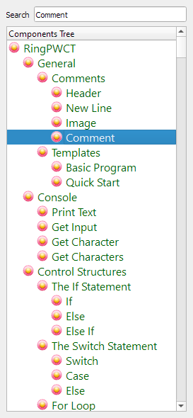
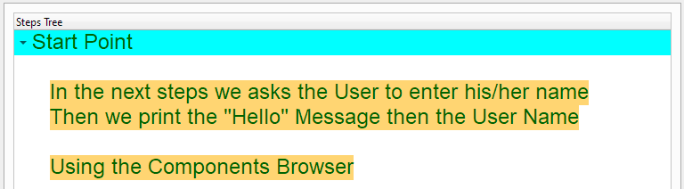
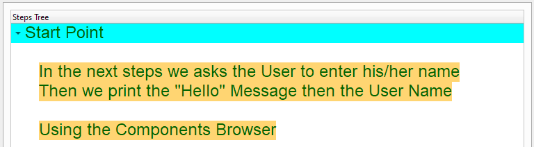
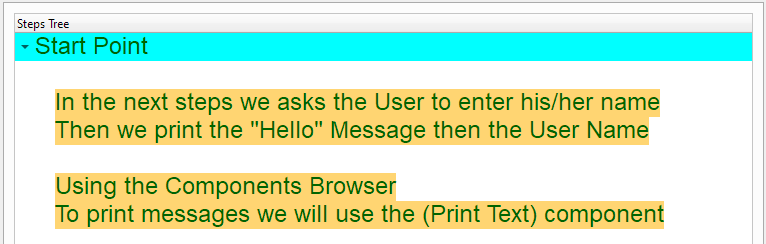
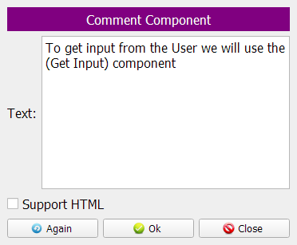
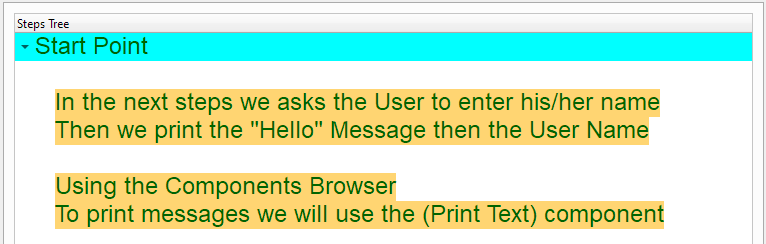
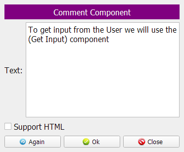
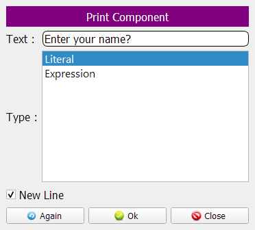
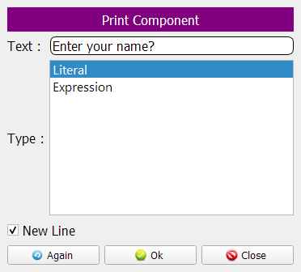
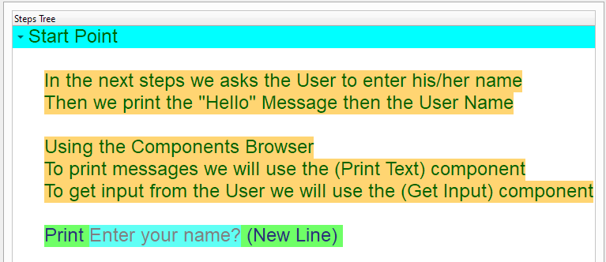

Short Circuit Evaluation¶
In this chapter we are going to learn about the Short Circuit Evaluation

Program Steps¶
After selecting the (Short Circuit Evaluation) template, we will get the next steps in the Goal Designer
The Steps Tree:
x = 0
y = 10
Print Test 1 (New Line)
If (x = 0 AND nice()) AND (y = 10 AND nice())
Print Great (New Line)
End of IF Statement
Print Test 2 (New Line)
If (x = 1 AND nice()) AND (y = 10 AND nice())
Print Great (New Line)
End of IF Statement
Print Test 3 (New Line)
If (x = 0 AND nice()) OR (y = 10 AND nice())
Print Great (New Line)
End of IF Statement
function nice
Print Nice (New Line)
Return 1
End of Function
Creating the Program¶
To create this program we will use the next components
Assignment
Print Text
If Statement
Define Function
Return
In the begining the Steps Tree is empty
Set x = 0 using the Assignment component


Set y = 10 using the Assignment component

 

Print (Test 1)
 



Test the condition: (x = 0 AND nice()) AND (y = 10 AND nice())

 

Print (Great)


Print (Test 2)


Check the condition: (x = 1 AND nice()) AND (y = 10 AND nice())


Print (Great)

Print (Test 3)

Check the condition: (x = 0 AND nice()) OR (y = 10 AND nice())


Print (Great)


Define the (Nice) function

Print (Nice)


Return (True) from the (Nice) function


Now we have the final Steps Tree in our program